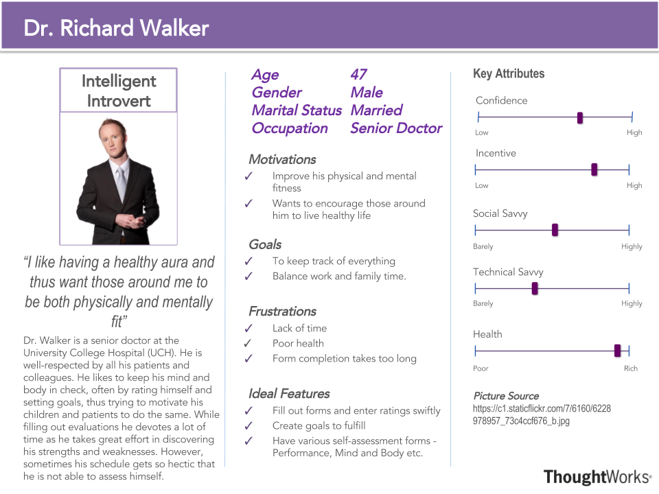
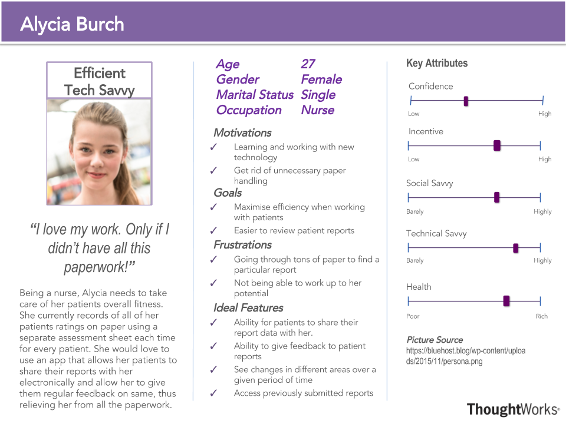
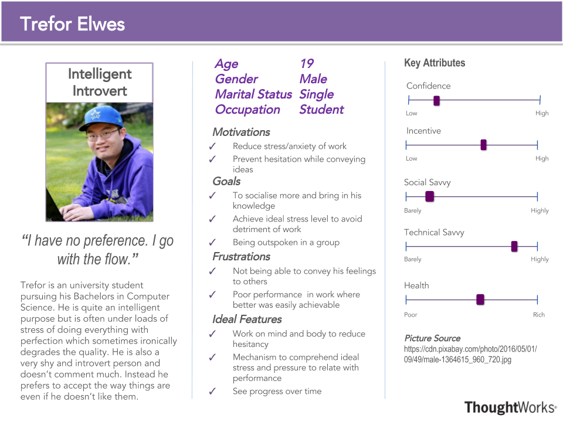

Lantern
Lantern is a cross-platform mobile application which provides effective, affordable support for emotional well-being. When a user enters the application he is asked to complete a simple quiz to evaluate his strengths and weakness in 5 aspects: mood, sleep, body, relationship and stress/anxiety. An evidence-based daily sessions is created from Cognitive Behavioral Techniques (CBT) and a 1:1 coach is provided after users complete the quiz. The coach can exchange real-time messaging with the user to help encourage, support, and give feedback based on user’s daily practice and program. Users can also customize their plans.
- Paid
- Coaches
- Contents
Lantern vs TH5
While Lantern focuses on individuals being coached by professional instructors assigned to them, TH5 works in direction to help people find their own strengths and weaknesses and encourage them motivate themselves on being able to set goals and routines to improve their emotional and physical well-being. Thus making it handy for the professionals in the field, alongside the common man. Since it is making use of coaches to train individuals, Lantern functions as a paid service, thus enabling people to access coaching sessions only after a subscription has been made.
TH5 is not only free, but also takes into consideration and focusses on a larger superset of parameters like ‘Yerkes Dodson stress performance curve’, ‘Warwick Edinburgh Mental Well Being Score’ to enable users to assess themselves in a more comprehensive manner.
In the long run, TH5 shall also allow individuals have access to advanced features like creating groups and thus setting group goals, allowing another individual(s) as an admin who can then access their data & stats and then give them feedback on the same.
At the same time, as far as mobile platforms are concerned, TH5 as an mobile app will be available on both Android and iOS app stores, whereas, Lantern is only available on iOS.
Mobile Application Platforms
Android
Unveiled in 2007 by Google, Android is a Linux kernel based mobile operating system for touchscreen incorporating mobile-devices encompassing smartphones and tablets. As of June 2016, the Google play store has had over 2.2 million Android apps published which have collectively been downloaded over 65 billion apps downloaded. In fact, as suggested from the above diagram, Android has the title of the leading global market share holder among the smartphone OS in sales currently dominating with about 87.8% of the market. Android has the largest installed base of all OS of any kind, making it suitable choice to target the wide audience that have access to it.
iOS
Coming second after Android in terms of global market share in sales (11.5%) by the third quarter of 2016, iOS is an Apple Inc. developed mobile operating system that powers many of Apple’s devices including iPhone, iPod Touch and iPad. As of June 2016, the Apple App Store has had over 2 million iOS applications published and 130 billion apps downloaded thus outclassing even Android in terms of the number of apps downloaded. Prioritising performance over appearance, iOS serves in totality serves as a user-friendly platform making it one of the best mobile OS in the world
Windows Phone
Appearing first in the October 2010, the Windows Phone is a family of mobile OS developed by Microsoft that supersedes the Windows Mobile. The latest Windows OS release, with its colorful and user-friendly interface has increased its demand all over the world positioning it third after Android and iOS. As of recent 2016, Windows currently holds 0.4% as far as the global market shares in sales are concerned.
Our Choice
Taking into consideration the various mobile operating systems available in the market, Android and iOS seem the most attractive out of all. Ranking 1 and 2 respectively, together, Android and iOS dominate the market with about 99% of the market shares. Focussing on these two mobile OS, TH5 targets the majority of the smart phone holder thus giving it a wide audience that can make use of it.
Server and Database
-Speed
Node. js:
Node.js runs on top of Google’s V8 JIT-compiled JavaScript engine, which is extremely fast on implementing dynamic languages. Node.js also provides non-blocking I/O since it is based on JavaScript asynchronous programming. As a web application spends most of its time waiting for network or database connections, this makes Node.js a suitable language to use here.
Java and PHP:
These two have strong mathematical foundations and they have been used for longer period of time, Java spends more time on setting up separate threads and they both required to translate to/from JSON because many servers and databases return data in JSON, while JSON is part of the foundation of JavaScript, thus Node.js doesn’t have to worry about this.
-Tooling
Node. js:
Node.js' package ecosystem, npm, is the largest ecosystem of open source libraries out there. It allows you to install and manage dependencies, set configuration variables, define scripts and more. It also manages different versions of code thus allowing version control and preventing version conflict.
PHP:
PHP’s Composer project is not provided with PHP by default, PHP developers may want to install node.js at some points.
-Experience level
Every member within our team has at least some basic JavaScript experience and Node.js is relatively easier to get started. At the same time, one of the team members has a high experience level in developing with Node.js, thus making it a quick start for everyone to make contribution towards the program.
-Weakness of Node.js:
As mentioned above, Node.js is a single-threaded platform focused on I/O bound applications on top of a language that has no support for co-routines. It is much better than heavy-weight threads with shared state as you have in Java, but it’s a really bad concurrency primitive. Also most of the libraries have reached a status of stable, as a modern language, JavaScript is lack of libraries, it’s difficult to assess the quality of a particular module because the lack of features for ensuring the quality of code from JavaScript itself.
Front-end (Ionic)
Ionic is a HTML5 framework which supports all the languages you already know to build a website and it contains a large amount of components, such as popups, cards and so on. Most of the components provide HTML5 and CSS features and some has JavaScript functionalities. It’s really simple to use for implementing hybrid applications by drag and drop the desired components into places to generate a basic UI for your application. Ionic provides ability to build cross-platform web application on one codebase.
Wrapper(PhoneGap/Cordova)
Execute wrapper targeted into different platforms automatically using just one codebase. Because we want to have both iOS and Android version of our application without implementing using languages or toolsets for each platform.
After our analysis of a variety of server languages, PHP, Java, Node.js, we decided to go ahead with Node.js and its Express framework to implement our web application in order to maintain control of view, and handle database operations in MySQL.
Human–Computer Interaction Analysis
First Persona

Second Persona

Third Persona

First Scenario
The Patient Setting
Jo is 35 years old. He has a young family and works as a builder. He often suffers from back pain which causes him to have to take unpaid time off work. He has chronic anxiety. When Jo has an exacerbation of back pain he arranges to see his GP, and Jo will take a week of work. Jo becomes very anxious at these times worrying that he will not be able to provide for his family. This tends to lead to a sense of panic and make him feel out of control. He will tend to then isolate himself from friends and family and comfort eat with junk food. Jo has been in the cycle for 5 years and the GP previously has prescribed antidepressants and referred him for counselling, but Jo didn’t find this particularly helpful. Instead, Jo decided to make use of the ‘The Human Five’ app to help him to manage his health and wellbeing during acute exacerbations of back pain. In this way he was able to identify a greater range of solutions rather than only seeing his GP for pain killers. Apart from that, by means of the app he was able to optimise his health and wellbeing during everyday life to help prevent back pain, and manage his anxiety.
Second Scenario
The Healthcare Worker Setting
Sarah is a 42 year old nurse. She works on a busy admission ward at the hospital working a 12 hour shift three times a week. She is a single mum with two children 14yrs and 16yrs. She is generally healthy though would like to lose some weight. She often feels very stressed juggling her busy life, and feels she can be unfairly irritable and angry towards her children. She is a person that always tries to do her best, but recognises due to the combination of her circumstances she sometimes aware that she is not always performing well at work and worries she will make mistakes. Her boss tends to be quite critical if she feels staff are underperforming, but to make up for this brings in doughnuts for staff once a week, and Sarah will usually eat the doughnut but then feels guilty soon after. Via the Human Five app, Sarah is able to set herself manageable achievable small goals each day or week. As she achieves these small goals her short term health and wellbeing will improve with a sense of achievement. This will also improve her longer term health and wellbeing. In fact, she also decides to incorporate the use of the app into her work appraisal, which if used appropriately, would help her boss understand how she can assist Sarah’s health and wellbeing which would subsequently improve her performance at work.
Lantern Competitor
Node.JS
Express.JS
Research Article Java vs Node.JS
Research Article PHP vs Node.JS
MySQL
Ionic
Cordova